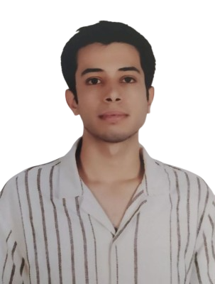
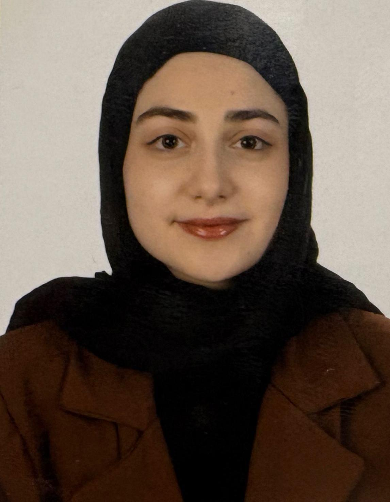
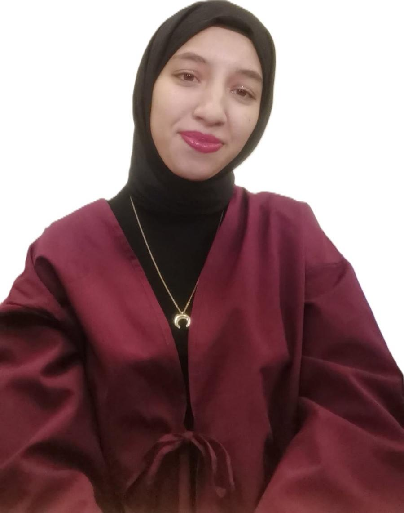
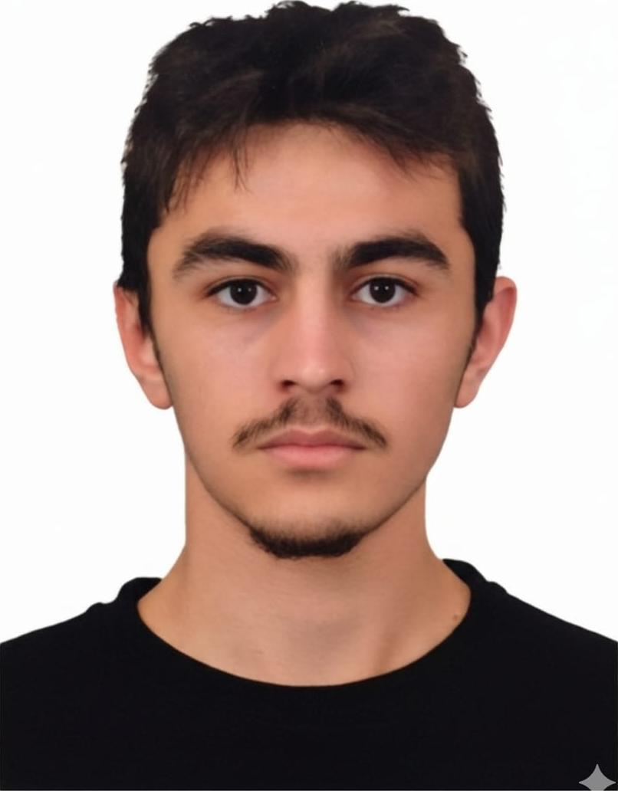
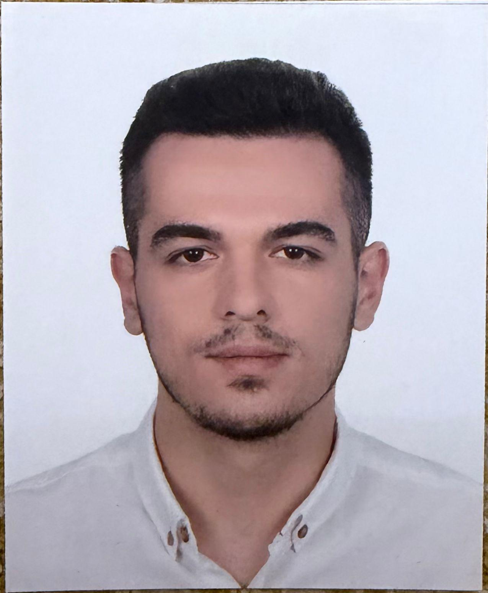
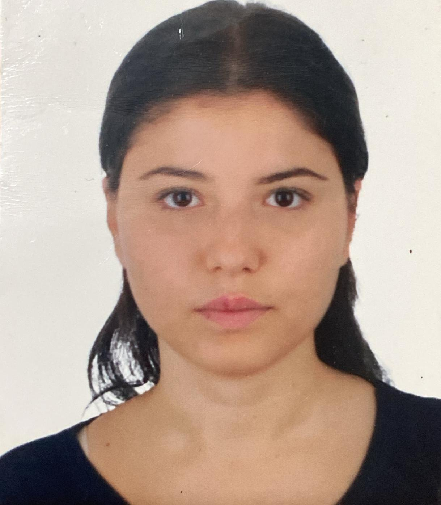
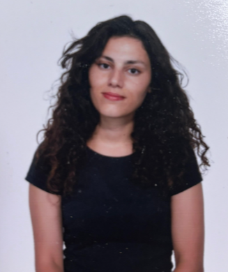

Ekibimiz
Selçuk TÜME’nin gücü, disiplinlerarası iş birliğini merkezine alan dinamik kadrosundan gelir. Mühendislik, ziraat ve veterinerlik alanlarını bir araya getirerek; teknolojik yenilikleri tarımsal üretim ve hayvan sağlığıyla entegre eden bütüncül bir yaklaşım benimsiyoruz.
Aktif Üye
Temel Disiplin
Ar-Ge Projesi
TEKNOFEST Hedefi
Takım Liderliği
Selçuk TÜME'nin vizyonunu, stratejik planlamasını ve disiplinlerarası koordinasyonunu yönlendiren lider kadromuz.
Yusuf Can Olğun
Takım Başkanı • Selçuk Üniversitesi
Selçuk TÜME'nin kurucu vizyonunu şekillendiren; mühendislik, ziraat ve veterinerlik disiplinlerinin ortak bir hedef doğrultusunda senkronize çalışmasını sağlayan takım başkanı. TEKNOFEST 2026 süreçlerinde ve Ar-Ge inovasyonlarında tüm ekiplerin koordinasyonunu ve liderliğini yürütmektedir.
Esameldin Kamaleldin
Başkan Yardımcısı
Takım içi çalışma takvimi, disiplinlerarası ekip uyumu ve operasyonel süreçlerin kesintisiz yürütülmesinden sorumlu yönetim lideri.
Samet Şahinli
Başkan Yardımcısı
Proje geliştirme aşamalarının organizasyonu, teknik altyapı ihtiyaçları ve süreç yönetiminden sorumlu yönetim lideri.
Takım Üyelerimiz
Mühendislik, Ziraat ve Veterinerlik fakültelerinden tarım teknolojileri ve hayvancılıkta yenilikçi çözümler üreten takım üyelerimiz.

Atakan Arslan
Mühendislik Fakültesi
Yazılım & Yapay Zeka

Azra Genç
Veteriner Fakültesi
Hayvan Sağlığı & Biyoteknoloji
Berk Önen
Ziraat Fakültesi
Hassas Tarım Sistemleri
Damla Nur Türksoy
Ziraat Fakültesi
Bitki Koruma & Tarımsal Veri

Hayrunisa Polat
Mühendislik Fakültesi
Donanım & Gömülü Sistemler
Hüsnü Caner Eyüpoğlu
Mühendislik Fakültesi
Mekatronik & Robotik

Mehmet Ulaş
Veteriner Fakültesi
Sürü Takip & Sağlık İzleme

Muzaffer Kodaman
Veteriner Fakültesi
Biyolojik Sensörler & Teşhis
Ömer Faruk Pekgüleç
Veteriner Fakültesi
Hayvansal Üretim & Teknoloji

Sudem Savurkan
Veteriner Fakültesi
Veri Analizi & Saha Çalışmaları

Ülfiye Akbay
Ziraat Fakültesi
Toprak Analizi & Akıllı Sulama
Bu Ekibin Bir Parçası Olun
Tarım, mühendislik ve veterinerlik alanlarında geleceği şekillendiren projelerimizde yer almak, TEKNOFEST heyecanını ve disiplinlerarası Ar-Ge kültürünü bizimle yaşamak ister misiniz?
Başvuru Yap arrow_forward